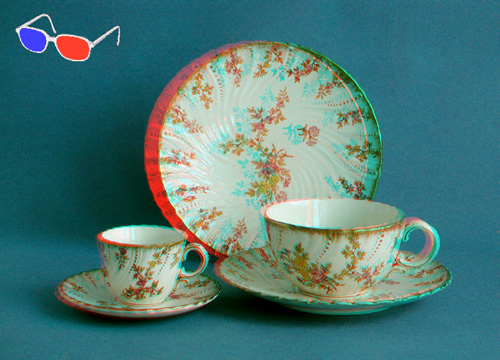
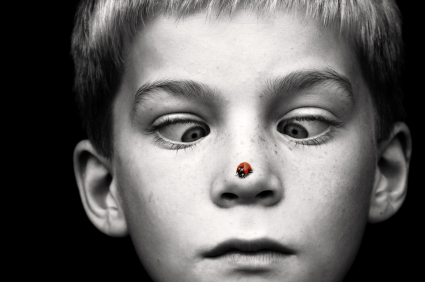
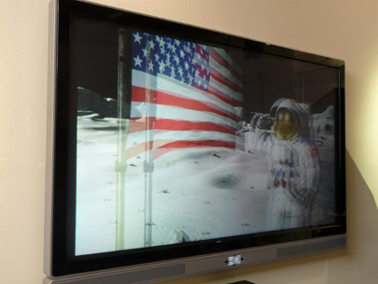
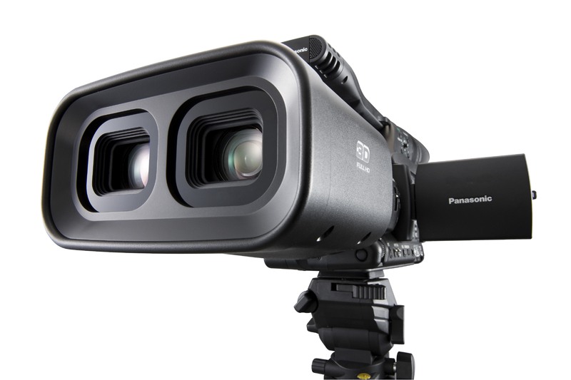
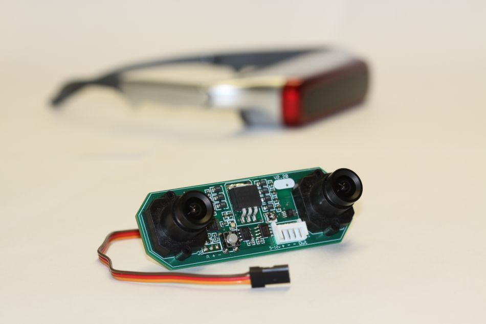
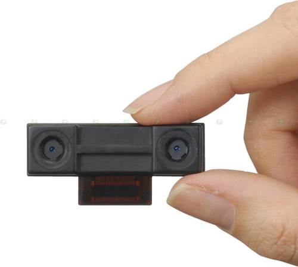

Troche Teorii Efekt trójwymiarowy można uzyskać dzięki stereoskopii Wymaga dostarczenia do mózgu dwóch obrazów, widzianych z perspektywy lewego i prawego oka. 
Troche Teorii Stereoskopia tak naprawdę oszukuje ludzki mózg Istnieje też możliwość oglądania stereopar bez użycia stereoskopu - należy tylko odpowiednio ustawić wówczas oczy w zezie zbieżnym 
Troche Teorii Nowoczesne komputery potrafią takie stereoskopowe, obrazy generować w czasie rzeczywistym Wystarczą odpowiednie algorytmy przesuwające obraz i dodające dominantę czerwona lub niebieską. 
Kamery Te profeslonalne i te trochę mniej .. Używana przy produkcji Avatar-a Używana przy produkcji Piraci Z Karaibów Miniaturyzacja Kamer Miniaturyzacja Kamer ^ Kliknij Na Obszar Wyżej ^